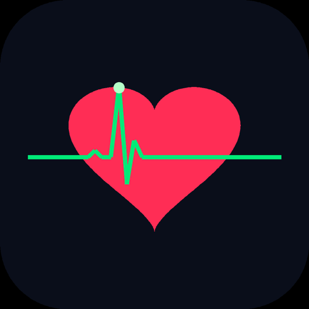
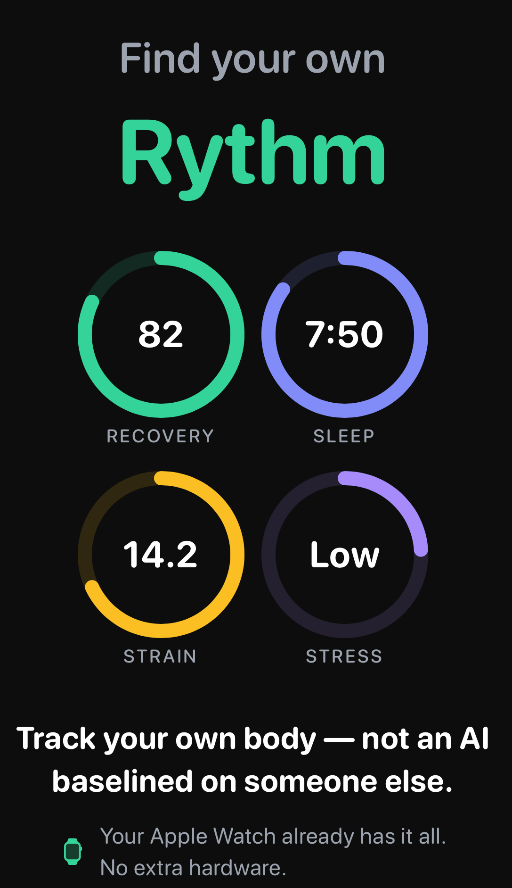
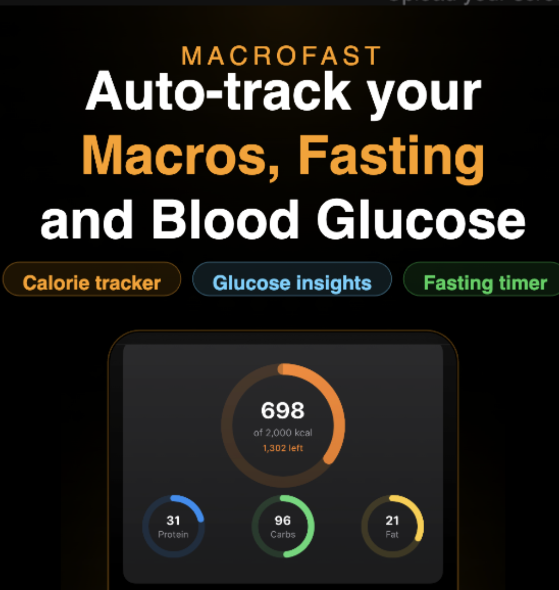
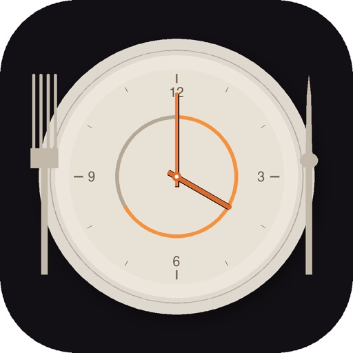
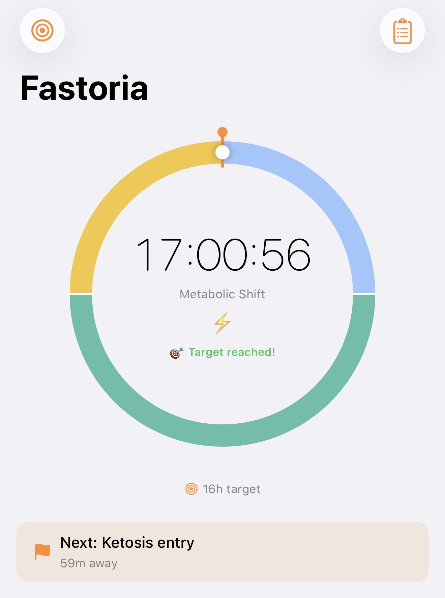
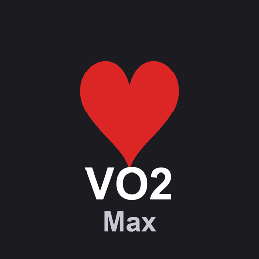
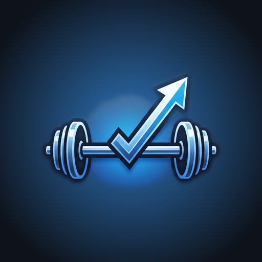
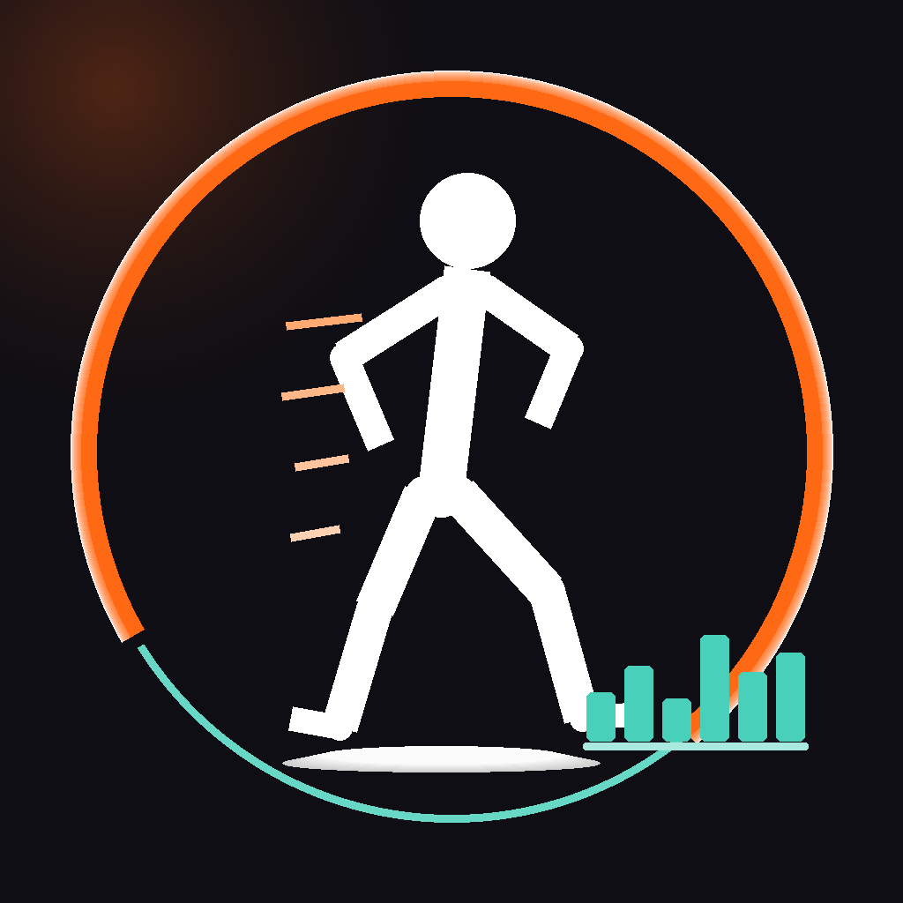
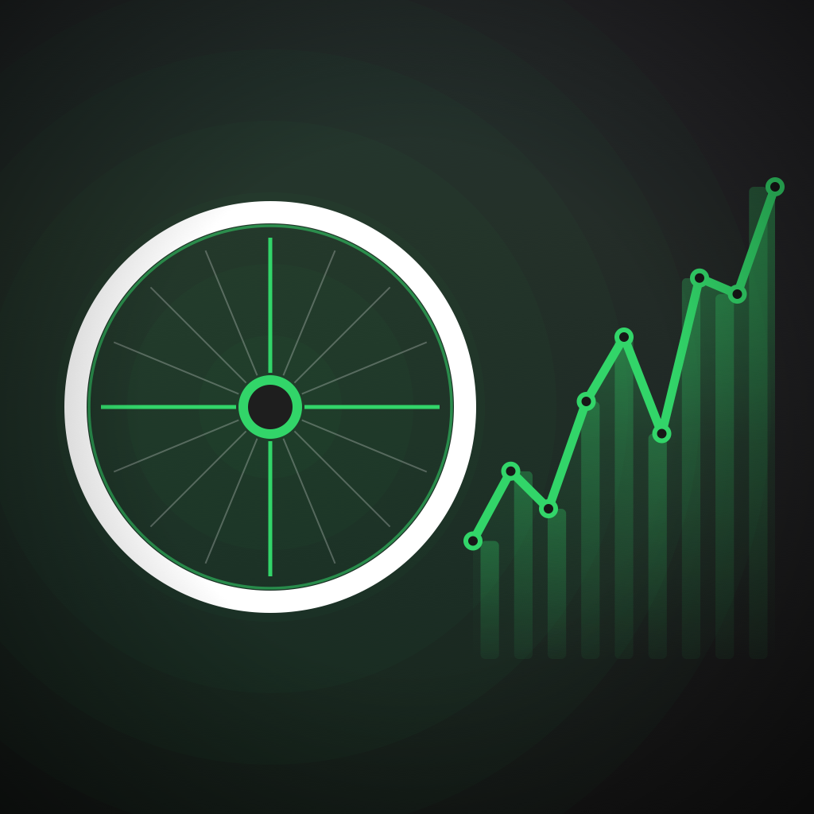

Apps by Bramhand
Small, focused iPhone apps for recovery, sleep, fasting and nutrition — built on Apple Health, with your data staying on your device.

Rythm
Recovery & Strain
Know whether today is a day to push or a day to back off. Rythm reads your Apple Health data — HRV, resting heart rate, sleep and workouts — and turns it into a daily recovery score, a strain score, and a plain-English insight about what changed and why.
- Daily recovery, sleep, strain and stress scores
- Cardio fitness age and long-term trends
- A short daily insight explaining what moved your numbers

Subscription required
MacroFast
Calorie, Macro & Fasting Tracker
Your fast tracks itself. Log a meal and MacroFast works out your fasting window from it automatically — no timer to remember to start or stop. Scan a barcode or search an offline food database for calories and macros, and if you wear a CGM, see how what you ate and how long you fasted line up with your glucose.
- Automatic fasting window from your last logged meal, with live zone tracking
- Barcode scanning plus an offline USDA food database — calories, protein, carbs and fat
- Glucose tab reads your CGM data from Apple Health, alongside your meals and fasts

Free download · Premium subscription available

Fastoria
Intermittent Fasting Tracker
See what fasting actually does to your body. Start your fast and watch the ring fill — then open Insights to see your heart rate, HRV, blood glucose and weight graphed across the fast, pulled straight from Apple Health. Most fasting apps stop at the timer.
- Fasting Insights: heart rate, HRV, blood glucose and body weight through your fast
- Animated fasting timer with common presets (16:8, 18:6, OMAD)
- Calendar history and streaks — no account, no sign-up

Free download · Premium subscription available
MySleepMusic
Sleep timer for Apple Music
Fall asleep to your own Apple Music library. Set a timer, and MySleepMusic fades the volume down gently and stops playback — so the music doesn't play all night or cut off abruptly.
- Sleep timer with a gradual volume fade-out
- Plays your existing Apple Music library and playlists
- Dark, dimmed night interface; keeps playing in the background
Subscription required

VO2Stats
VO₂ Max Estimator
One VO₂ max number is a guess. VO2Stats estimates yours several ways at once — from your resting and max heart rate, running pace, a walk test, heart-rate recovery, and more — all from your Apple Health history, so you see the range instead of trusting a single figure. Apple's own estimate is shown alongside for comparison.
- Nine published VO₂ max methods, side by side, from your own data
- History and trends per method, plus a multi-method agreement range
- Methods Guide with the formula, reference and limitations for each
Free · no ads, no in-app purchases

Gym
Track Weights & Muscle
A focused strength tracker built around rotating routines. Log your sets, reps, weight and RPE with a built-in rest timer, and Gym tracks your estimated 1-rep-max trend and per-muscle volume over time — showing which muscles you've worked on an interactive body model. Fully on-device, no account.
- Rotating routine cycles that advance as you complete each day
- Set logging with rest timer, editable history, and 1RM trend charts
- Per-muscle volume on an interactive muscle model
Subscription required

StrideStats
Walking & Running Stats
Every walk, run, and hike you've ever logged in Apple Health, all in one place. StrideStats pulls your full activity history — years back — and breaks it down by activity type with charts for distance, pace, elevation, heart rate, and more. A dedicated Steps tab shows daily step counts from your iPhone and Apple Watch.
- Separate tabs for running, walking, and steps — plus a full charts explorer
- Time filters from 7 days to all-time, with year-over-year comparison
- Daily step counts with goal tracking, streaks, and weekly averages
- Personal records: longest run, best pace, most elevation, peak steps, and more
One-time purchase · no subscription, no ads, no in-app purchases

BikeStats
Cycling Stats & History
Every ride you've ever logged in Apple Health, all in one place. BikeStats pulls your full cycling history — years back — and breaks it down into outdoor vs. indoor, with charts for distance, speed, elevation, power, cadence, and more. Indoor rides without GPS get estimated distances based on your own outdoor averages.
- Separate outdoor and indoor tabs, plus a combined view and full charts explorer
- Time filters from 7 days to all-time, with year-over-year comparison
- Indoor distance estimation from your real outdoor average speed
- Personal records: longest ride, fastest speed, most elevation, peak power, and more
One-time purchase · no subscription, no ads, no in-app purchases
Voice Amplify
Hear Soft Voices Louder
Turn your iPhone into a simple personal sound amplifier. Voice Amplify listens through the microphone and plays it back louder through the speaker in real time — perfect for hearing a soft-spoken family member or a quiet conversation more clearly. Big, simple controls designed to be easy for everyone. It is not a hearing aid or medical device.
- One giant Start/Stop button and an easy Loudness slider
- Built-in feedback reduction to prevent howling and squeal
- Adjustable delay, plus support for wired or Bluetooth microphones
- No account, no ads, no data collected — audio is never recorded or stored
Free · no subscription, no ads, no in-app purchases